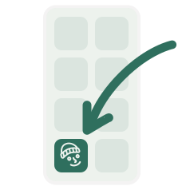
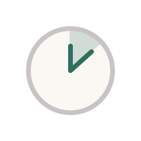
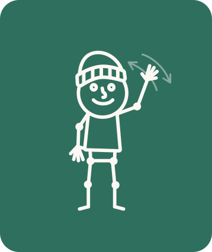

Kein Konto · Keine Daten · Gratis
Sechs Übungen, dreimal die Woche. Danach gibst du einer Person den Push weiter. Das ist die ganze App.
Du trainierst, du schickst einer Person einen Link. Es kommt nichts zurück und es gibt nichts abzuschliessen. Keine Gruppe, keine Rangliste, keine Erinnerung, die dich schlecht fühlen lässt. Nur eine Person, die du an dem Tag mitziehst.
Warum
Rundrücken, vorgezogene Schultern, ein vorgekipptes Becken. Nichts davon kommt über Nacht, und nichts davon geht über Nacht weg. Es braucht eine Gewohnheit, kein Programm. Zehn Minuten sind kurz genug, dass man sie wirklich macht.
So geht's

Installieren
Fragen
Im Speicher deines Browsers, auf diesem Gerät, als ein einziger Eintrag. Es gibt keinen Server, der etwas davon sieht. Löschst du die Browserdaten oder die installierte App, ist der Verlauf weg. Löschen kannst du alles hier oder am Ende der Übersicht.
Dein Vorname und die sechs Übungen von heute, codiert im Link selbst. Wer ihn öffnet, sieht, dass du trainiert hast, und bekommt dieselbe Einheit angeboten. Es wird nichts gespeichert und es kommt nichts zurück.
Ja, nach dem ersten Laden. Die Zeichnungen aller Übungen holt die App im Hintergrund dazu, nicht nur die der heutigen Einheit. Im Zug ohne Empfang läuft die Einheit darum genauso.
Von selbst. Liegt eine bereit, meldet sich oben «Neue Fassung bereit», und du lädst neu, wenn es dir passt. Mitten in einer Einheit wird nichts untergeschoben.
Drei Einheiten von Montag bis Sonntag sind das Ziel. Eine Einheit pro Tag zählt. Es gibt keine Erinnerung, keine Benachrichtigung und nichts, was einen verpassten Tag nachträgt.
Überspringen, oben rechts. Wer gar nicht auf den Boden mag, stellt vor dem Start auf «Nur im Stehen» um. Für einzelne Bereiche gibt es noch keine Übung im Stehen, dort bleibt es am Boden.
Nein. Sechs Übungen gegen die Folgen vom Sitzen, nicht mehr. Bei Schmerzen abbrechen, bei anhaltenden Beschwerden zu jemandem gehen, der dich anschauen kann.

friendly push beta
Sechs Übungen gegen Rundrücken, vorgezogene Schultern und ein vorgekipptes Becken.
🚀

friendly push beta
Verlauf
Geschafft